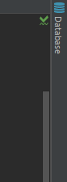

created: 20170731
If you want to use SQLite as your database, you need to set the path where your database file should be stored and change the driver:
# app/config/config.yml
doctrine:
dbal:
driver: pdo_sqlite
path: "%kernel.root_dir%/sqlite.db"
charset: UTF8Then execute the following commands (Of cource, after creating some entities):
php bin/bash doctrine:database:create
php bin/bash doctrine:schema:update --forceAfter that, you're able to add the database to your IDE, e. g. PHPStorm:
